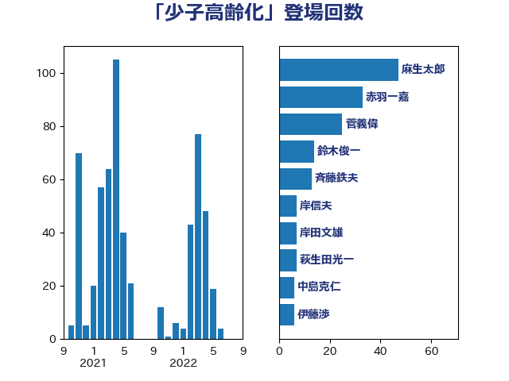

単語「少子高齢化」

| 麻生太郎 | 自由民主党 | 47 回 |
| 赤羽一嘉 | 公明党 | 33 回 |
| 菅義偉 | 自由民主党 | 25 回 |
| 鈴木俊一 | 自由民主党 | 14 回 |
| 斉藤鉄夫 | 公明党 | 13 回 |
| 岸信夫 | 自由民主党 | 7 回 |
| 岸田文雄 | 自由民主党 | 7 回 |
| 萩生田光一 | 自由民主党 | 7 回 |
| 中島克仁 | 立憲民主党 | 6 回 |
| 伊藤渉 | 公明党 | 6 回 |
| 平井卓也 | 自由民主党 | 6 回 |
| 田村憲久 | 自由民主党 | 6 回 |
| 金子恭之 | 自由民主党 | 6 回 |
| 武田良太 | 自由民主党 | 5 回 |
| 西村康稔 | 自由民主党 | 5 回 |
| 住吉寛紀 | 日本維新の会 | 4 回 |
| 後藤茂之 | 自由民主党 | 4 回 |
| 河西宏一 | 公明党 | 4 回 |
| 藤田文武 | 日本維新の会 | 4 回 |
| 西岡秀子 | 国民民主党 | 4 回 |
| 高木かおり | 日本維新の会 | 4 回 |
| おおつき紅葉 | 立憲民主党 | 3 回 |
| たがや亮 | れいわ新選組 | 3 回 |
| 上田清司 | 国民民主党 | 3 回 |
| 塩川鉄也 | 日本共産党 | 3 回 |
| 山本博司 | 公明党 | 3 回 |
| 本田顕子 | 自由民主党 | 3 回 |
| 東徹 | 日本維新の会 | 3 回 |
| 梅村みずほ | 日本維新の会 | 3 回 |
| 橋本聖子 | 無所属 | 3 回 |
| 武見敬三 | 自由民主党 | 3 回 |
| 河野太郎 | 自由民主党 | 3 回 |
| 浅田均 | 日本維新の会 | 3 回 |
| 海江田万里 | 立憲民主党 | 3 回 |
| 牧山ひろえ | 立憲民主党 | 3 回 |
| 石井苗子 | 日本維新の会 | 3 回 |
| 若宮健嗣 | 自由民主党 | 3 回 |
| 輿水恵一 | 公明党 | 3 回 |
| 須藤元気 | 無所属 | 3 回 |
| ながえ孝子 | 無所属 | 2 回 |
| 三浦信祐 | 公明党 | 2 回 |
| 中山展宏 | 自由民主党 | 2 回 |
| 古賀友一郎 | 自由民主党 | 2 回 |
| 坂本哲志 | 自由民主党 | 2 回 |
| 城井崇 | 立憲民主党 | 2 回 |
| 室井邦彦 | 日本維新の会 | 2 回 |
| 宮本岳志 | 日本共産党 | 2 回 |
| 小泉進次郎 | 自由民主党 | 2 回 |
| 尾身朝子 | 自由民主党 | 2 回 |
| 川田龍平 | 立憲民主党 | 2 回 |
| 平山佐知子 | 無所属 | 2 回 |
| 新垣邦男 | 立憲民主党 | 2 回 |
| 朝日健太郎 | 自由民主党 | 2 回 |
| 松沢成文 | 日本維新の会 | 2 回 |
| 横沢高徳 | 立憲民主党 | 2 回 |
| 櫻井周 | 立憲民主党 | 2 回 |
| 沢田良 | 日本維新の会 | 2 回 |
| 浅野哲 | 国民民主党 | 2 回 |
| 甘利明 | 自由民主党 | 2 回 |
| 田島麻衣子 | 立憲民主党 | 2 回 |
| 石垣のりこ | 立憲民主党 | 2 回 |
| 福島伸享 | 無所属 | 2 回 |
| 船橋利実 | 自由民主党 | 2 回 |
| 茂木敏充 | 自由民主党 | 2 回 |
| 藤巻健太 | 日本維新の会 | 2 回 |
| 野上浩太郎 | 自由民主党 | 2 回 |
| 野田聖子 | 自由民主党 | 2 回 |
| 馬場伸幸 | 日本維新の会 | 2 回 |
| 高橋千鶴子 | 日本共産党 | 2 回 |
| あかま二郎 | 自由民主党 | 1 回 |
| 一谷勇一郎 | 日本維新の会 | 1 回 |
| 三原じゅん子 | 自由民主党 | 1 回 |
| 三木圭恵 | 日本維新の会 | 1 回 |
| 三浦靖 | 自由民主党 | 1 回 |
| 上月良祐 | 自由民主党 | 1 回 |
| 上田英俊 | 自由民主党 | 1 回 |
| 上野賢一郎 | 自由民主党 | 1 回 |
| 下村博文 | 自由民主党 | 1 回 |
| 下野六太 | 公明党 | 1 回 |
| 世耕弘成 | 自由民主党 | 1 回 |
| 中川宏昌 | 公明党 | 1 回 |
| 中野洋昌 | 公明党 | 1 回 |
| 井上英孝 | 日本維新の会 | 1 回 |
| 井上貴博 | 自由民主党 | 1 回 |
| 井原巧 | 自由民主党 | 1 回 |
| 今井絵理子 | 自由民主党 | 1 回 |
| 伊佐進一 | 公明党 | 1 回 |
| 伊波洋一 | 無所属 | 1 回 |
| 伊藤俊輔 | 立憲民主党 | 1 回 |
| 伊藤孝恵 | 国民民主党 | 1 回 |
| 伊藤忠彦 | 自由民主党 | 1 回 |
| 伴野豊 | 立憲民主党 | 1 回 |
| 冨樫博之 | 自由民主党 | 1 回 |
| 前原誠司 | 国民民主党 | 1 回 |
| 加田裕之 | 自由民主党 | 1 回 |
| 加藤勝信 | 自由民主党 | 1 回 |
| 古屋範子 | 公明党 | 1 回 |
| 古川元久 | 国民民主党 | 1 回 |
| 吉川元 | 立憲民主党 | 1 回 |
| 国光あやの | 自由民主党 | 1 回 |
| 國重徹 | 公明党 | 1 回 |
| 土田慎 | 自由民主党 | 1 回 |
| 大西健介 | 立憲民主党 | 1 回 |
| 宮崎政久 | 自由民主党 | 1 回 |
| 宮崎雅夫 | 自由民主党 | 1 回 |
| 宮路拓馬 | 自由民主党 | 1 回 |
| 寺田静 | 無所属 | 1 回 |
| 小倉將信 | 自由民主党 | 1 回 |
| 小宮山泰子 | 立憲民主党 | 1 回 |
| 小山展弘 | 立憲民主党 | 1 回 |
| 小林鷹之 | 自由民主党 | 1 回 |
| 小森卓郎 | 自由民主党 | 1 回 |
| 小沼巧 | 立憲民主党 | 1 回 |
| 小渕優子 | 自由民主党 | 1 回 |
| 小野泰輔 | 日本維新の会 | 1 回 |
| 山口那津男 | 公明党 | 1 回 |
| 山谷えり子 | 自由民主党 | 1 回 |
| 岸真紀子 | 立憲民主党 | 1 回 |
| 新藤義孝 | 自由民主党 | 1 回 |
| 新谷正義 | 自由民主党 | 1 回 |
| 日下正喜 | 公明党 | 1 回 |
| 末松信介 | 自由民主党 | 1 回 |
| 杉久武 | 公明党 | 1 回 |
| 杉尾秀哉 | 立憲民主党 | 1 回 |
| 杉田水脈 | 自由民主党 | 1 回 |
| 松木けんこう | 立憲民主党 | 1 回 |
| 柳ヶ瀬裕文 | 日本維新の会 | 1 回 |
| 柳本顕 | 自由民主党 | 1 回 |
| 柿沢未途 | 無所属 | 1 回 |
| 梶山弘志 | 自由民主党 | 1 回 |
| 森屋隆 | 立憲民主党 | 1 回 |
| 森山浩行 | 立憲民主党 | 1 回 |
| 橘慶一郎 | 自由民主党 | 1 回 |
| 江島潔 | 自由民主党 | 1 回 |
| 泉健太 | 立憲民主党 | 1 回 |
| 浜田聡 | NHK党 | 1 回 |
| 清水真人 | 自由民主党 | 1 回 |
| 渡辺孝一 | 自由民主党 | 1 回 |
| 滝波宏文 | 自由民主党 | 1 回 |
| 熊田裕通 | 自由民主党 | 1 回 |
| 田村まみ | 国民民主党 | 1 回 |
| 盛山正仁 | 自由民主党 | 1 回 |
| 石井啓一 | 公明党 | 1 回 |
| 石井正弘 | 自由民主党 | 1 回 |
| 石川香織 | 立憲民主党 | 1 回 |
| 神田憲次 | 自由民主党 | 1 回 |
| 稲富修二 | 立憲民主党 | 1 回 |
| 篠原孝 | 立憲民主党 | 1 回 |
| 羽田次郎 | 立憲民主党 | 1 回 |
| 藤川政人 | 自由民主党 | 1 回 |
| 角田秀穂 | 公明党 | 1 回 |
| 赤木正幸 | 日本維新の会 | 1 回 |
| 赤池誠章 | 自由民主党 | 1 回 |
| 越智隆雄 | 自由民主党 | 1 回 |
| 足立康史 | 日本維新の会 | 1 回 |
| 野村哲郎 | 自由民主党 | 1 回 |
| 金子恵美 | 立憲民主党 | 1 回 |
| 青木愛 | 立憲民主党 | 1 回 |
| 高橋光男 | 公明党 | 1 回 |
| 高階恵美子 | 自由民主党 | 1 回 |
| 鳩山二郎 | 自由民主党 | 1 回 |
| 齋藤健 | 自由民主党 | 1 回 |